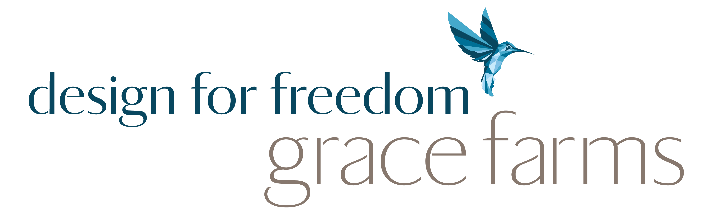

Responsible Sand
and Silicates
A next generation global platform bringing together stakeholders to build a future where sand and silicates are sourced, used and produced responsibly
Watch
Introducing the Coalition for Responsible Sand and Silicates
Recorded 4 June 2026 at the Coalition's Advisory Council meeting at Inter IKEA, Älmhult, Sweden. Members from across the supply chain share why they joined and what being part of this effort means.
The Coalition is the only organisation dedicated to responsible sourcing and production practices for sand and silicate materials. We give companies and organisations acting on these materials the legitimacy, the shared knowledge and the practical foundation to act credibly.
We offer a credible responsibility commitment signal for these materials. We build the shared knowledge base and technical supports that make responsible practices clearer, more defensible and less costly. We work with standards bodies as a connector, critical friend and resource. We help them bring sand and silicates into their frameworks, so that responsible action by our Members can be recognised.
Our approach follows the five step due diligence process set out in the OECD Due Diligence Guidance, adapted to what these materials require.

We need to restore regard for these materials.
That begins by addressing their invisibility.
Our Founders
Our Founders built this platform. They brought operational knowledge, research, funding and hard questions and co-designed the Coalition's purpose, governance and programme of work.
We are grateful to each of them and to the dozens of organisations that contributed insight along the way.
Any organisation that joins in 2026, our founding year, is recognised as a Founder, with a direct hand in shaping what responsible practice looks like for these materials.


Join us
If you source, produce or govern sand and silicate materials, we would like to work with you.

About our logo. The Coalition's mark was developed during our incubation at The University of Queensland, in the Coalition's formation period. The castle motif was adapted from a royalty-free icon by erix subyarko via the Noun Project. Abdulrazak Y. contributed the logo refinement and the layout incorporating our name, and the final lockup was completed in-house.